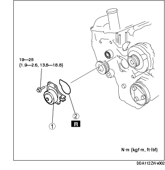

Water pump removal/installation [ZY]
1. Disconnect the negative battery cable.
2. Remove the splash shield.
3. Drain the engine coolant. (See ENGINE COOLANT REPLACEMENT [ZY].)
4. Remove the drive belt. (See DRIVE BELT REPLACEMENT [ZY].)
5. Remove the crankshaft pulley. (See TIMING CHAIN REMOVAL/INSTALLATION [ZY].)
6. Position the generator out of the way. (See GENERATOR REMOVAL/INSTALLATION [ZY].)
7. Remove in the order indicated in the table.

8. Install in the reverse order of removal.
9. Add the engine coolant. (See ENGINE COOLANT REPLACEMENT [ZY].)
10. Inspect the system for engine coolant leakage. (See ENGINE COOLANT LEAKAGE INSPECTION [ZY].)